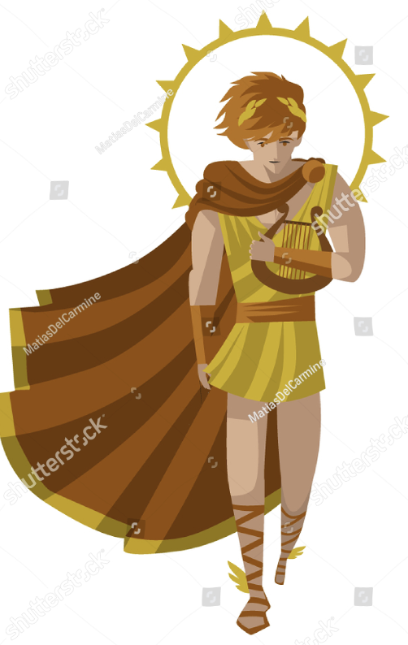
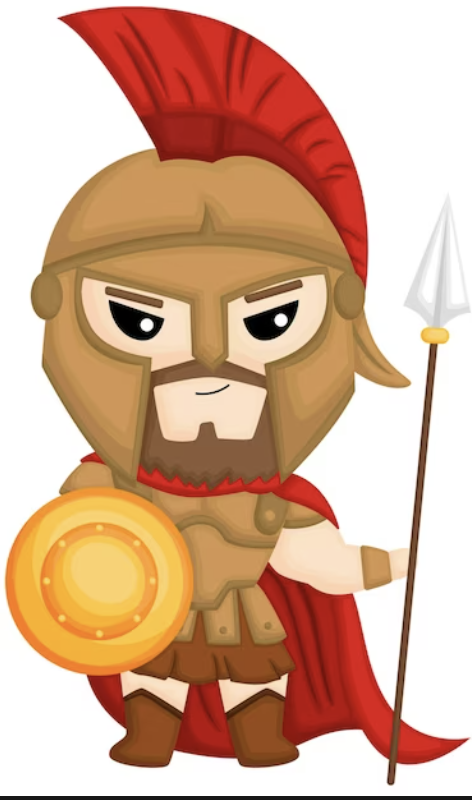
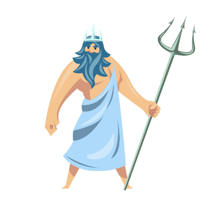

| Navigation: | Go to homepage | | Go to stories |
|---|
Apollo is the god of Archery, the Sun, Prophecy, poetry, and much, much more. He and his twin sister Artemis probably spend their time competing to see who the best archer in the family is, but we all know that neither of them will ever be as good as robin hood no matter how much they practice. Oh, he's a prophet too.
Ares, the god of war, is most well-known for his dislike of peaceful protestors and his conspicuous lack of information as to where he was from 1939-1945. While he may be hot-headed at times, Ares is one god you do not want to get on the bad side of, so its best to just be careful and courteous around him.
The god of the sea is one of the most well-known gods in large part to the success of the Percy Jackson series. Did you know that Poseidon spawned into existence from the distressed cries of a turtle eating a plastic straw? Poseidon proceeded to save the turtle and go on a campaign against straws forevermore.
